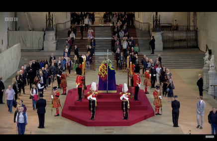

現在の日時: Loading...
画像を表示してみた

projact内リンクしてみようGo to p-canape Page And p-indx Page
アンカータグを使用して外部リンクCanapeでお寛ぎ Page
ここは
Webサイト制作ではおなじみのindex.htmlファイルですね。
Projectを開くとWebサイトの最初のページが表示されます。Webページの title や言語の指定はこちらから書き換えます。
参考記事https://www.webcreatorbox.com/tech/vite-react
VScodeで稼動 npm run dev コマンドする。もし sh: vite: command not foundとなってたら% npm install --save-dev viteの後再度コマンドする。